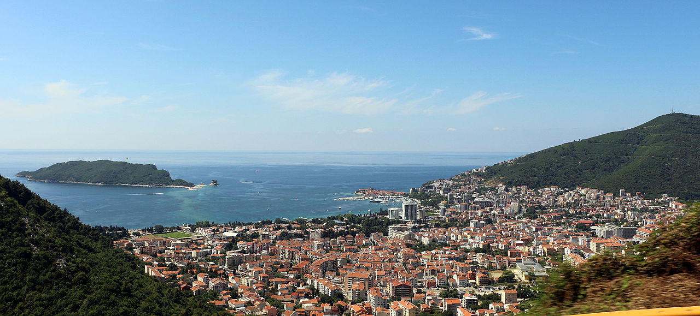

_2019-06-21.jpg)
Toliau seka paragrafas, įsiminkite, paragrafas.
Žemiau galima pridėti nuotrauką ir kokį nors sąrašą.

Jeigu kažką primiršite, visada naudokite Google.
| Eil.Nr. | Pavadinimas | Šalis | Buvau/nebuvau | Paveiksliukas | Nuoroda |
|---|---|---|---|---|---|
| 1. | Barcelona | Ispanija | Buvau |
|
Barcelona |
| 2. | Madeira | Portugalija | Nebuvau | |
Madeira |
| 3. | New York | Amerika | Nebuvau |
|
New York |
| 4. | Budva | Juodkalnija | Buvau |  | Budva |
| 5. | Sydney | Australija | Nebuvau |
|
Sydney |